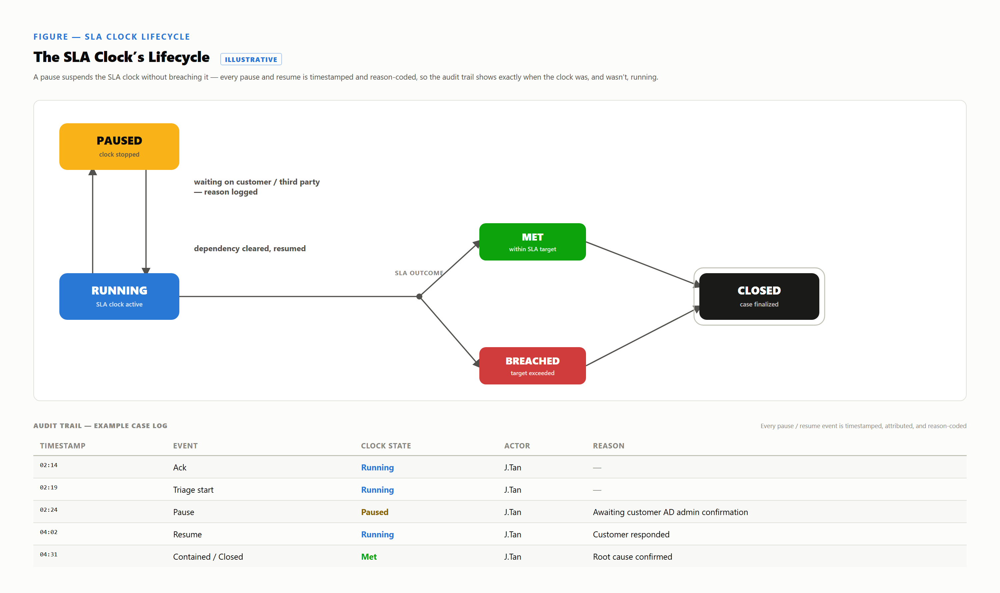

A clock measures elapsed time, not who could act on it. Stop-the-clock records that a stretch belonged to someone else's queue — the framework's most honest instrument; claimed only after the fact, the same artifact Section 7 documents under a different name.
Six wait-states recur across SOC operations, each one blocked on someone else.
| Pause state | Waiting on | Ends when |
|---|---|---|
| Customer response | Named customer contact | Reply, or contracted response ceiling |
| Vendor action | Vendor, under its Underpinning Contract | Vendor confirms complete |
| Missing telemetry | Log-source or pipeline owner | Log arrives, or decision to proceed |
| Maintenance window | Change-advisory board / infra owner | Window opens, closes, or cancels |
| Account-owner validation | The alert's triggering account owner | Owner confirms or denies |
| Internal team action | Named team under an internal OLA, outside the case owner's own chain | Team logs action complete |
Unlike Case Study 4's clock-zero dispute, this is literal: the data hasn't arrived.
The internal-team-action row applies only when the named team sits outside the case owner's own reporting chain; an ordinary delay from the owner's own closely-coupled team is an OLA gap, not a pause. Case Study 7's unaccepted L2 handoff is exactly that kind of delay — it belongs on a breach report as an OLA gap, not hidden behind a stopped clock.
A pause earns its name only when a real, contactable dependency exists when it begins, not when the analyst is busy.
Every state above reduces to one test; missing any part, the SOC has stopped measuring.
| Required element | Must contain | Absence permits |
|---|---|---|
| Timestamped reason | Exact start moment, checkable cause | A length invented after the fact |
| Named owner | The specific person/team/vendor blocked on | An unfalsifiable, unnamed excuse |
| Resume trigger | The exact ending event | Closure whenever convenient, not when cleared |
| Resume latency | Gap between the trigger event and the resumed-timestamp, measured | A pause that outlives its own trigger — one contact attempt, no timely follow-up, unflagged |
A pause is a state transition a system should model explicitly, per Figure 9.1's worked example.

J. Tan acknowledges at 02:14, pauses at 02:24 for "awaiting customer AD admin confirmation," and closes MET at 04:31. Elapsed time reads as a breach at two hours seventeen; the trail shows the SOC's actual work was thirty-nine minutes, the rest the administrator's. The machine enforces only the state, not the reason's truth.
Pausing the clock isn't cheating the SLA — it's the only way the SLA can ever tell the truth about who was actually waiting on whom.